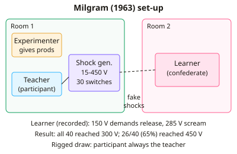

A-level Psychology Year 12 · Topic 3
Social area: core studies
The social area core studies investigate how people influence each other, in obedience, disobedience, groups and helping.
We will study Milgram's classic obedience study and Burger's modern replication, and Bocchiaro's research on disobedience.
Then we look at the BBC Prison Study, cross cultural differences in helping, and the subway helping study.
- 7 subtopics
- 279 questions
- Free: 3.1 notes and 10 questions
In this topic
- 3.1Milgram (1963) Behavioural study of obedienceFree below · 33 questions
- 3.2Burger (2009) Partial replication of MilgramOpen in Full Marks · 33 questions
- 3.3Bocchiaro et al. (2012) Disobedience and whistle-blowingOpen in Full Marks · 37 questions
- 3.4Reicher and Haslam (2006) The BBC Prison StudyOpen in Full Marks · 40 questions
- 3.5Levine et al. (2001) Cross-cultural differences in helping strangersOpen in Full Marks · 73 questions
- 3.6Piliavin et al. (1969) Good Samaritanism: the subway studyOpen in Full Marks · 37 questions
- 3.7Perry et al. (2015) Oxytocin and personal spaceOpen in Full Marks · 26 questions
3.1 · Free notes
Milgram (1963) Behavioural study of obedience

Key points
- Aim: to test how far ordinary people would obey an authority figure who told them to give increasingly painful electric shocks to another person. This was a controlled laboratory study at Yale University, USA.
- Sample: 40 male participants aged 20–50 from a range of occupations. They were recruited by newspaper advert and direct mail (volunteer sampling) and paid $4.50 just for turning up.
- Procedure: a rigged draw meant the participant was always the teacher and the confederate (Mr Wallace, a 47-year-old accountant) was always the learner. The teacher gave a shock each time the learner got a word-pair wrong.
- The shock generator had 30 switches from 15 V to 450 V in 15 V steps, labelled from 'Slight Shock' to 'Danger: Severe Shock' and then 'XXX'. Teachers first received a real 45 V sample shock.
- The learner's pre-recorded protests escalated: a grunt at 75 V, a demand to be released at 150 V, an agonised scream at 285 V, and silence after 330 V. No shocks were actually delivered.
- If the teacher hesitated, the experimenter gave up to four standardised verbal prods, from 'Please continue' to 'You have no other choice, you must go on'.
- Quantitative results: 100% of participants went to 300 V and 65% (26/40) went to the maximum 450 V. Five participants stopped at 300 V.
- Qualitative observations: many participants sweated, trembled, stuttered and bit their lips. 14 of 40 showed nervous laughter and 3 had full seizures, showing real distress.
- Conclusion: ordinary people will obey an authority figure even when this means harming an innocent person. Situational factors such as the prestigious Yale setting and the experimenter's authority are important.
- Ethics: there was deception (fake draw and shocks), no fully informed consent and a risk of psychological harm. The prods undermined the right to withdraw. Milgram used a debrief, reunited participants with the learner and followed up (84% were glad they took part).
- Evaluation: a standardised procedure gives control and reliability. Weaknesses are low ecological validity, possible demand characteristics (participants may have guessed the shocks were fake) and a biased sample (US males only), which limits generalisability.
In more detail
- Sample: 40 men aged 20–50 from New Haven, recruited by newspaper advert and paid $4.50.
- Procedure: as "teacher", each gave apparent shocks from 15 to 450 volts, rising in 15-volt steps, to a "learner" who was really a confederate.
- Prods: four standard prods, such as "The experiment requires that you continue."
- Results: 65% went to 450 volts, all went to 300 volts, and many showed extreme tension, including nervous laughter and, in three cases, seizures.
- Afterwards: in a follow-up questionnaire, 84% said they were glad to have taken part.
Practice
Milgram (1963) Behavioural study of obedience: 10 questions
Pick an answer to check it, or open the answer for the explanation.
1. Where did Milgram (1963) carry out his behavioural study of obedience?
- Santa Clara University
- University of Amsterdam
- Stanford University, USA
- Yale University, USA
Show answer
D: Yale University, USA. Milgram's study took place in a laboratory at Yale University. Stanford is Zimbardo's prison study, and Santa Clara is where Burger's 2009 replication took place.
2. Which describes the sample in Milgram's (1963) study?
- 40 male Yale students aged 18–21
- 40 men aged 20–50, volunteers
- 40 women aged 20–50, students
- 100 men and women, random
Show answer
B: 40 men aged 20–50, volunteers. Milgram used 40 males aged 20–50 from varied jobs, recruited by newspaper advert and direct mail, so they were volunteers rather than a random sample.
3. What percentage of Milgram's participants gave the maximum 450 V shock?
- 100%
- 12.5%
- 35%
- 65%
Show answer
D: 65%. 26 of 40 participants (65%) went to 450 V. All 40 (100%) reached 300 V, which is a different finding.
4. All 40 reached 300 V and 5 stopped there. How many continued beyond 300 V?
- 35
- 26
- 5
- 40
Show answer
A: 35. 40 − 5 = 35 participants continued past 300 V. Of these, 26 reached 450 V.
5. 26 of 40 reached 450 V and 5 stopped at 300 V. How many stopped between 315 V and 435 V?
- 26
- 5
- 14
- 9
Show answer
D: 9. Beyond 300 V there were 35 participants, and 26 of them reached 450 V. So 35 − 26 = 9 stopped between 315 V and 435 V.
6. The shock generator had switches from 15 V to 450 V in 15 V steps. How many switches?
- 30
- 450
- 45
- 15
Show answer
A: 30. 450 ÷ 15 = 30 switches. Each switch raised the voltage by 15 V.
7. Why did Milgram use a rigged draw to allocate roles?
- To give participants an equal chance
- To select the strongest participants
- To make the learner a volunteer
- So the participant was always the teacher
Show answer
D: So the participant was always the teacher. Both slips said 'teacher', so the real participant always became the teacher and the confederate always played the learner. This was deception.
8. At what voltage did the learner first demand to be released?
- 330 V
- 75 V
- 285 V
- 150 V
Show answer
D: 150 V. The pre-recorded learner grunted at 75 V and demanded release at 150 V. He screamed at 285 V and was silent after 330 V.
9. Which is the fourth and final verbal prod used by the experimenter?
- It is absolutely essential that you continue
- You have no other choice, you must go on
- Please continue
- The experiment requires that you continue
Show answer
B: You have no other choice, you must go on. The prods escalated, ending with 'You have no other choice, you must go on'. 'Please continue' is the first prod.
10. What did Milgram's follow-up questionnaire find about participants' feelings?
- All wished to repeat it
- 84% regretted taking part
- 84% were glad to have taken part
- Most felt it was pointless
Show answer
C: 84% were glad to have taken part. 84% said they were glad or very glad to have taken part, and only about 1% were sorry. Milgram used this to defend the ethics of the study.
Keep going in Full Marks
Full Marks has 33 questions on Milgram (1963) Behavioural study of obedience (23 more than here), set out in practice levels. You also get notes and 3D models for all 7 subtopics of Social area: core studies, plus games, timed exams and past papers.
On your exam board
- OCRTopic 3: Social area: core studies, Topic X: Wider reading: more classic studies
- EdexcelTopic 1: Social psychology
- CambridgeTopic 5: The social approach
Not in the AQA specification.